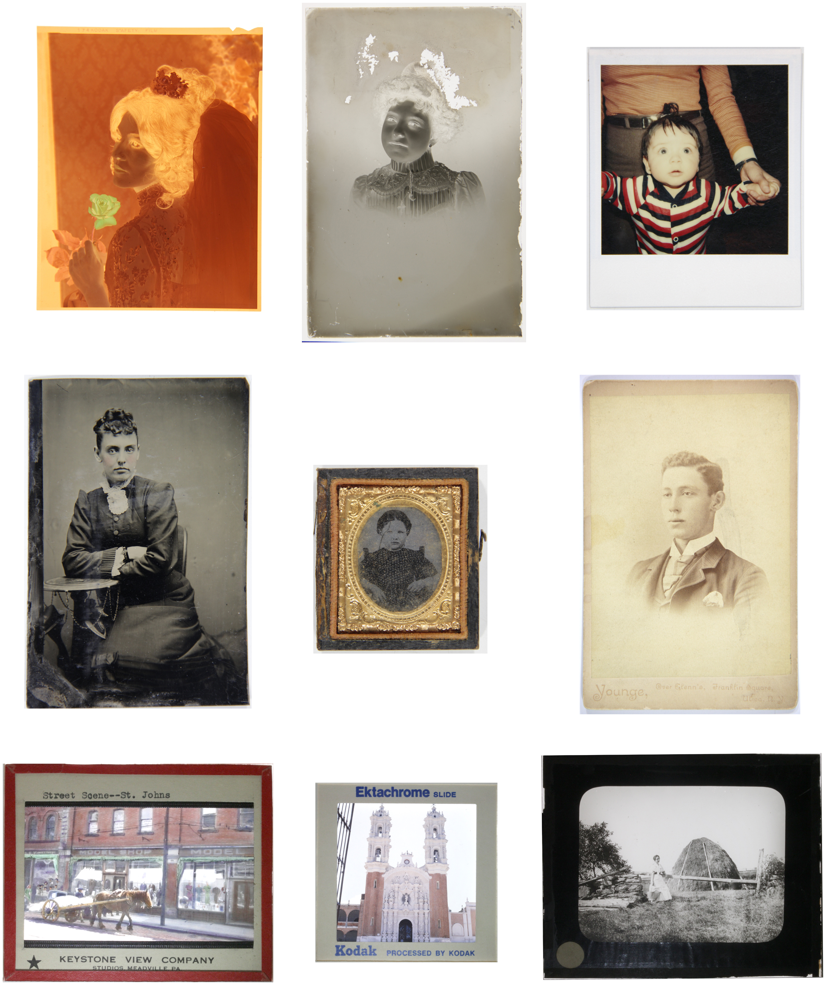
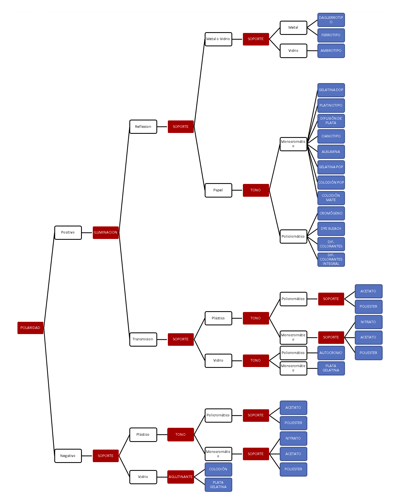
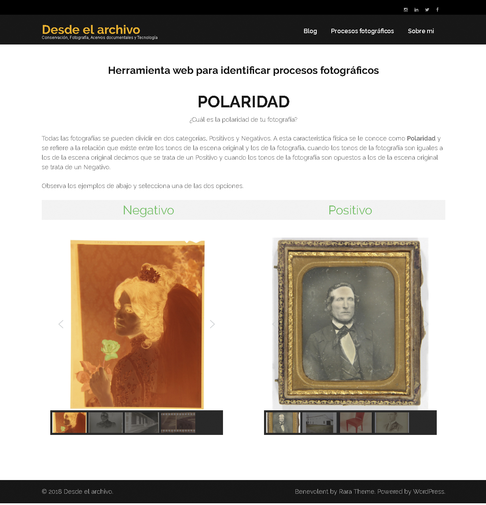

1.
Introducción
Este proyecto consiste de una metodología para identificar el proceso fotográfico en fotografías históricas, está inspirado en el concepto de árbol de decisiones utilizado en las ciencias de datos para clasificar entidades con base en sus diferentes atributos y valores, la implementación ha sido realizada por medio de una herramienta web en idioma español.
Este recurso está dirigido a archivistas historiadores y otros profesionales de archivos históricos en Latinoamérica y les permite identificar el proceso fotográfico entre una gama de 29 alternativas utilizadas a los largo de los siglos XIX y XX, para lo cual los usuarios son guiados paso a paso a través de la metodología por medio de preguntas sobre las características de la fotografía que buscan catalogar.

Figura 1. Diferentes procesos fotográficos históricos
2.
Antecedentes
La identificación del proceso fotográfico es una de las tareas fundamentales que realizan los archivos históricos en el ámbito de la catalogación de fotografías ya que brinda a los investigadores información sobre su temporalidad y características físicas, como el color, el tipo de soporte, el formato, entre otras.
Comúnmente la identificación del proceso fotográfico es una habilidad visual especializada que se transmite de persona a persona de manera empírica mediante la observación detallada de cientos de fotografías y el estudio de su evolución tecnológica. Esta forma de aprendizaje limita la diseminación de este conocimiento entre los profesionales de los archivos y como resultado de ello un gran número de fotografías se encuentran incorrectamente clasificadas dentro de los catálogos.
En la bibliografía sobre conservación de fotografías se han propuesto varios esquemas de clasificación, Lavedrine propone la división inicial de las fotografías por polaridad, posteriormente por soporte y finalmente por tono, aunque este es un modelo útil pone el énfasis en la conservación y no en la identificación (Lavedrine, 2009: 15). Reilly abordan específicamente el tema de la identificación, aunque enfocado únicamente a impresiones del siglo XIX, y no contempla negativos o impresiones a color del siglo XX (Reilly, 1986: 40). El Graphics Atlas (IPI, 2017) es una página que brinda una vasta información que ilustra y describe las características físicas de las fotografías y ayuda al usuario a identificarlas, sin embargo, al igual que las fuentes anteriores se ocupa principalmente de los procesos fotográficos más comunes en los archivos de Estados Unidos y en Europa y su contenido se encuentran en idioma inglés, lo que limita su utilidad y aplicación en archivos de Latinoamérica.
3.
Desarrollo
Una revisión bibliográfica de la literatura en español permitió definir la terminología y los conceptos más adecuados para nombrar cada uno de los procesos fotográficos las características físicas y sus valores (Barra y Gutiérrez, 2000: 19; Boadas et al. 2001: 211; SE, 2016: 20), con esta información posteriormente se elaboró una tabla de datos común para todos los procesos y sus atributos.
Figura 2. Tabla de datos de procesos, características físicas y valores.
Posteriormente la tabla de datos se tradujo en un árbol de decisiones, las características físicas se convirtieron en nodos de decisión, sus valores en ramas y los procesos fotográficos en hojas. Por un lado, este esquema proporciona la estructura de navegación a la página web y por otro le permite al usuario visualizar el panorama del universo posible y comprender las distintas combinaciones de atributos que caracterizan a los procesos fotográficos.

Figura 3. Árbol de decisión para la identificación de procesos fotográficos
Mediante el diseño y programación de la página web se recreó la estructura del árbol de decisión y utilizando preguntas con un lenguaje claro y sencillo se guía al usuario a través de la metodología, las respuestas se ilustran con galerías de imágenes que permiten comparar la fotografía que se busca identificar y encontrar similitudes. El objetivo principal de esta fase del proyecto fue hacer accesibles conceptos que son difíciles de comprender sólo verbalmente pero que son fáciles de reconocer de manera visual.

Figura 4. Interfaz de usuario de la herramienta web
4.
Conclusiones
Gracias a las posibilidades comunicativas de la tecnología web, herramientas como esta pueden contribuir a diseminar conocimientos especializados que son poco accesibles, lo cual a su vez permite a un mayor número de personas comprender y valorar la materialidad de las fotografías analógicas resguardadas en los archivos históricos.
Dirección web. http://www.desdeelarchivo.com/procesos-fotograficos/
5.
Referencias
Barra, P., y Gutiérrez, I. (2000). Normas Catalográficas del Sistema Nacional de Fototecas del INAH, México: INAH/CONACULTA.
Boadas, J., Casellas, L., y Suqyet, M. (2001). Manual para la Gestión de Fondos y Colecciones Fotográficas. Girona: CCG ediciones.
IPI. Image Permanence Institute. (2017). Graphic Atlas. http://www.graphicsatlas.org (recuperado el 16 de noviembre de 2017).
Lavedrine, B. (2009). Photographs of the Past: Process and Preservation. Los Ángeles: Getty Conservation Institute.
Reilly, J. (2009). Care and Identification of 19th-century Photographic Prints. Rochester: Eastman Kodak Co.
SE. Secretaría de Economía. (2016). Norma Mexicana NMX-R-069-SCFI-2016. Documentos fotográficos. Lineamientos para su Catalogación. México: Secretaría de Economía.